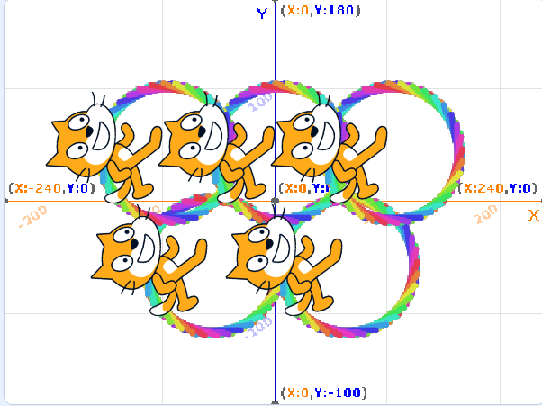
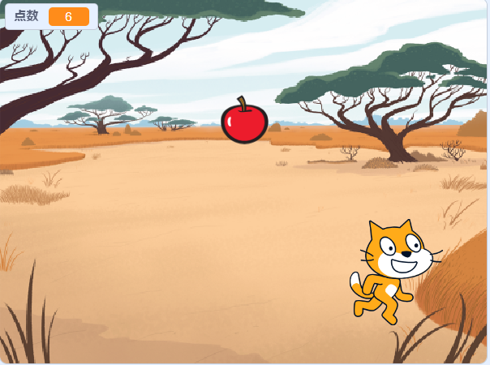

1週目のレポート ： 公大高専１年実習I-1
2b班35番 Mori
第1週目
1-1 サイエンスアート

1.内容
スクラッチを使って線を書くプログラムを使ってオリンピックのマークの5つの丸を描いた。
2.感想
スクラッチは昔に触った以来プログラミングを組み立てるのは本当に久しぶりだったけど、数値をいじっていって自分の思った通りの動きが作れたらかなり楽しかった。
1-2 ゲーム

1.内容
リンゴが落ちてきて、猫を移動させてリンゴをキャッチすると点数が入るゲームを作った。
2.感想
連打だと操作しづらいので、操作性を向上させたいと思って押してる間はずっと矢印キーの方向に動き続けて離したら止まるプログラムを自分で試したが上手くいかず、 スクラッチを使い慣れてる友達に教えてもらい、思ったものを作ることができた。
1-3 ホームページ作成
私のホームページ
1.内容
githubを用いてホームページの作成を行った。簡単な文章を書き込んだりした。
2.感想
詳しい仕組みなどはわからないけど、文章を入れるくらいなら簡単にできたので、仕組みを習えば簡単なものなら作れるかもしれないと思った。
各ページへのリンク
1週目のレポート
2週目のレポート
3週目のレポート
私のホームページ